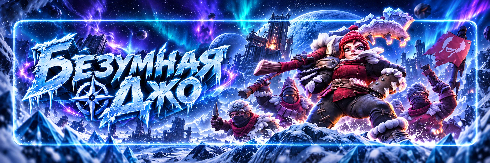

Безумная Джо
Автор - Sova
Безумная Джо — альянсовое PvE-событие, в котором бандиты волнами атакуют города участников и Штаб альянса.
Главная задача — не просто защитить свой город, а правильно распределить войска между союзниками и набрать как можно больше личных и альянсовых очков.
Для участия необходимо состоять в альянсе и иметь Топку 7 уровня или выше. Событие запускает руководство альянса.
Как проходит событие
За один запуск проходит 20 волн.
Большинство волн атакуют города участников альянса.
- 7 • 14 • 17 — особые атаки, связанные с игроками, находящимися онлайн.
- 10 • 20 — атака направляется на Штаб альянса.
По мере прохождения волн противники становятся сильнее.
Два поражения
Если ваш город дважды не смог отбиться, Безумная Джо перестаёт атаковать его до конца текущего запуска.
Но для вас событие на этом не заканчивается.
- отправляйте подкрепления союзникам;
- участвуйте в защите Штаба;
- уничтожайте войска Джо;
- продолжайте получать очки.
Держать там подкрепления больше нет смысла. Верните отряд и отправьте его в другой город, который Джо ещё продолжает атаковать.
Главная стратегия — подкрепления
Одна из самых эффективных тактик — заранее договориться с союзниками и обменяться подкреплениями.
Не нужно держать всю армию только у себя. Отправленные союзникам войска участвуют в отражении волн и приносят вам очки за уничтоженных противников.
Особенно важно помогать городам, которым сложно самостоятельно выдерживать следующие волны.
Не переполняйте один город
Не стоит всем игрокам отправлять подкрепления одному и тому же человеку.
Количество противников в волне ограничено. Если один город защищают сразу очень много игроков, убийства распределяются между большим количеством подкреплений. В результате каждый участник может получить меньше личных очков.
Лучше распределять армии между несколькими городами.
Лечение во время Джо
Когда вы лечите раненых, восстановленные войска снова появляются в вашем городе и начинают участвовать в его защите.
Если ваш город уже защищают союзные подкрепления, собственные войска начинают забирать часть убийств. Из-за этого союзники получают меньше очков.
Лечить войска игра не запрещает. Это именно стратегия распределения очков между участниками.
Если ситуация требует лечения для прохождения следующих волн, решение принимает сам игрок или руководство альянса.
Что оставлять в своём городе
Не существует одного универсального состава для всех сложностей.
При игре через взаимные подкрепления значительную часть войск можно отправлять союзникам. При этом в городе желательно оставить сильных героев на защите Баррикады.
Они помогут вашим оставшимся войскам дольше выдерживать атаки Джо.
Точный состав армии лучше подбирать по результатам конкретной сложности в 58 государстве, а не копировать схемы старых государств.
Волны 10 и 20 — Штаб альянса
На 10-й и 20-й волнах Джо атакует Штаб альянса.
Поэтому после окончания 9-й и 19-й волн внимательно следите за указаниями R4/R5. Часть игроков должна вернуть необходимые отряды и отправить их в Штаб.
Сначала убедитесь, что предыдущая волна по городу завершилась, иначе можно потерять часть очков.
Как защищать Штаб
Не отправляйте войска в Штаб случайным составом.
Количество и тип войск зависят от:
- выбранной сложности Джо;
- силы игроков альянса;
- доступных войск;
- текущей стратегии альянса.
Поэтому на волнах 10 и 20 лучше выполнять команду руководства.
Волны 7, 14 и 17
На 7-й, 14-й и 17-й волнах особенно важно находиться онлайн.
Эти волны отличаются от обычных атак, поэтому внимательно следите:
- кого атакует Джо;
- куда сейчас отправлены ваши войска;
- кому требуется подкрепление;
- свободны ли ваши походы.
Если играете активно, на этих волнах не уходите надолго из игры.
Горящий город
Пожар после атаки Джо сам по себе не уменьшает получаемые очки.
Поэтому правило «никого не тушить, иначе пропадут очки» не является подтверждённой механикой события.
Тушить или не тушить город можно по внутреннему правилу альянса.
Обычно нет необходимости тратить алмазы на тушение только ради события.
Главное не путать тушение пожара с лечением войск. Именно лечение может изменить распределение убийств между собственными войсками и подкреплениями.
Щит
Мирный щит не защищает от атак Безумного Джо.
Поэтому специально включать щит ради этого события не нужно. Атаки Джо являются частью события и проходят независимо от обычной защиты города от других игроков.
Ресурсы
При поражении от Безумного Джо обычные ресурсы вашего города не грабятся.
Поэтому эти атаки не нужно воспринимать как обычное PvP-нападение.
Телепортация
Во время активных волн лучше не телепортироваться без необходимости.
Телепортация может:
- нарушить заранее подготовленную схему подкреплений;
- увеличить расстояние между игроками;
- заставить союзников перенаправлять отряды;
- помешать быстро вернуться в защиту нужных городов.
Перед стартом лучше сразу занять удобное место рядом с основными участниками альянса.
Подготовка перед стартом
- Верните войска со сбора ресурсов.
- Освободите походы.
- Проверьте лечение и количество доступных войск.
- Поставьте сильных героев на Баррикаду.
- Договоритесь, кого будете подкреплять.
- Заранее узнайте правила альянса для волн 10 и 20.
- Будьте готовы менять цель подкрепления, если город уже получил два поражения.
Что делать участнику
До старта:
- подготовить свободные походы;
- договориться о взаимных подкреплениях;
- проверить героев на защите города.
Во время события:
- отправлять большую часть свободных войск союзникам;
- не переполнять один город подкреплениями;
- следить за 7-й, 14-й и 17-й волнами;
- готовиться к защите Штаба на 10-й и 20-й волнах;
- не лечить войска без необходимости, если альянс играет на максимум очков;
- после двух поражений своего города продолжать помогать другим;
- если защищаемый вами город уже получил два поражения, перенести войска к другому игроку.
Частые ошибки
- Держать всю армию у себя и никого не подкреплять.
- Всем альянсом подкреплять один и тот же город.
- Лечить войска после каждой волны и забирать убийства у союзных подкреплений.
- После двух поражений своего города решить, что событие закончилось.
- Оставить войска в городе союзника, которого Джо уже дважды победил.
- Пропустить 10-ю или 20-ю волну по Штабу.
- Отозвать войска перед окончанием предыдущей волны.
- Тратить щит в надежде остановить Джо.
- Считать, что горящий город обязательно нужно оставить гореть ради очков.
- Использовать старые схемы войск без проверки на текущей сложности 58 государства.
Подкрепляем друг друга.
Проходим 20 волн.
Следим за 7 / 14 / 17.
На 10 / 20 защищаем Штаб альянса.
Не лечимся без необходимости, если играем на максимум очков.
После двух поражений собственного города продолжаем помогать союзникам.
Если союзник уже получил 2 поражения — переносим подкрепление.
Тушение пожара само по себе очки не уменьшает.
Щит от Джо не защищает.
Главный принцип события:
не пытаться пережить Джо в одиночку, а использовать войска всего альянса как одну общую систему защиты.